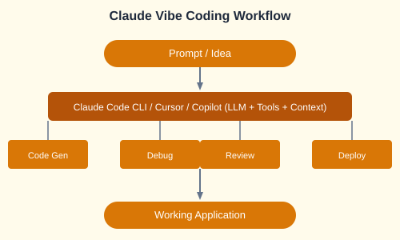

"Vibe coding" is an AI-native coding paradigm where you describe what you want in natural language and let AI generate the code. The shift is from writing code line-by-line to curating AI-generated output.

| Concept | Description |
|---|---|
| LLMs | Large Language Models power code generation (Claude, GPT-4o) |
| Tools & Loops | AI reads files, runs commands, iterates on feedback |
| Context Engineering | Writing effective prompts and agents.md / claude.md files |
| Workflow Evolution | From manual coding to AI-assisted to fully AI-driven |
Compare the major AI coding IDEs:
| Tool | Strengths | Best For |
|---|---|---|
| Cursor | Deep context awareness, inline editing | Daily development |
| Copilot | GitHub integration, VS Code native | Enterprise teams |
| Codex CLI | Terminal-native, agentic actions | Automation scripts |
| Claude Code | Full project context, checkpoints | Complex codebases |
# In Cursor or Claude Code CLI, you can prompt:
"Create a full-stack Kanban board with FastAPI backend and vanilla JS frontend.
Include: drag-and-drop, add/delete columns, persist to SQLite."
# The AI will generate:
# backend/main.py - FastAPI routes
# frontend/index.html - Drag-and-drop UI
# backend/models.py - SQLite modelsBuild commercial MVPs quickly: FastAPI + Docker + SQLite + a modern frontend.
# FastAPI setup
pip install fastapi uvicorn sqlalchemy
# Dockerfile
FROM python:3.11
COPY . /app
RUN pip install -r requirements.txt
CMD ["uvicorn", "main:app", "--host", "0.0.0.0"]